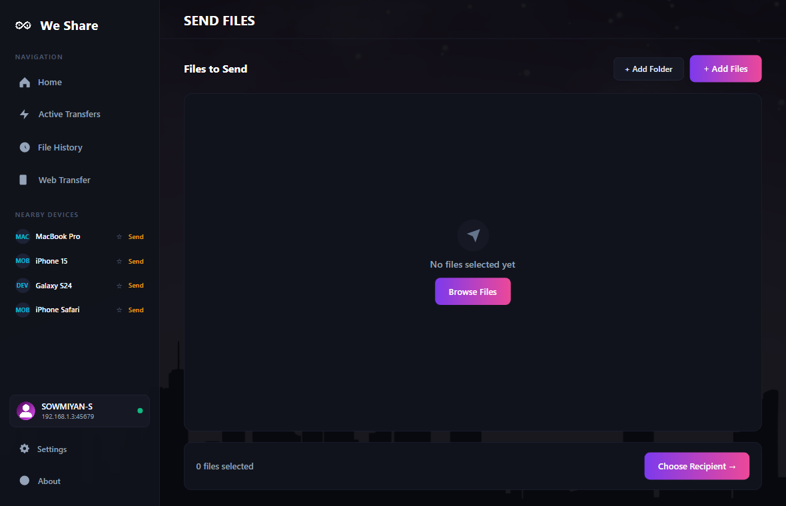
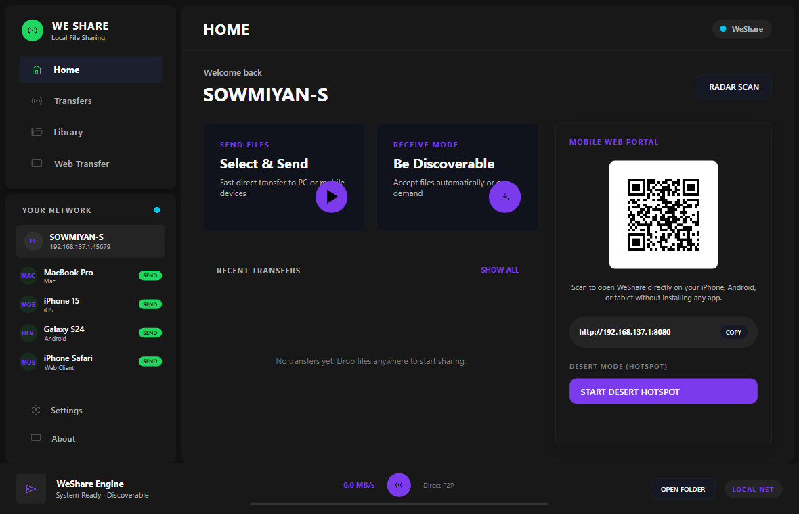

Download We Share
An offline-first, open-source file transfer tool. Simple setup, zero accounts, and full transfer speeds.
Download for Windows — FreeWindows 10 / 11 · No account
We Share transfers files directly between computers at the maximum physical speed of your local network connection. No external servers, no logins, and your data never leaves your local network.


No arbitrary bandwidth limits, no cloud middle-men, and no account registrations. Your data stays on your local network.
Direct peer-to-peer transmission at maximum physical connection speed. No file size limits, no cloud relays, no bandwidth caps.
TCP SocketsDevices running We Share on your local network appear on your radar automatically. No pairing codes or manual setups.
UDP DiscoveryAccess and download shared files on mobile devices (iOS, Android) via any web browser. No app install required on client phones.
Port 8080Nothing is saved to your drive without your explicit permission. You review, accept, or reject every incoming transfer request.
User ConsentAll transfers are archived in a secure, local SQLite database on your machine. Zero cloud trackers, zero remote telemetry.
SQLite DB100% open source under the MIT License. There are no tracking scripts or background servers. Inspect or compile the code yourself.
100% OfflineLaunch We Share on both the sending and receiving computers. They will automatically scan the local network and discover each other.
Drag and drop files or folders into the application, select the target device from the radar visual, and click Send.
The receiving computer receives a prompt. Once accepted, files are sent directly over TCP. No internet connection is used.
If there is no local network or Wi-Fi router available, We Share can establish a direct connection between computers using native Windows APIs.
The fastest way to move data. Files are sent directly over your local Wi-Fi or wired Ethernet connection.
guide →Access shared files from any phone or tablet on the same Wi-Fi using the built-in HTTP server. No app installation required on the client.
guide →Upload photos, videos, or documents directly from your phone's browser to your computer's designated folder.
guide →An offline-first, open-source file transfer tool. Simple setup, zero accounts, and full transfer speeds.
Download for Windows — FreeWindows 10 / 11 · No account